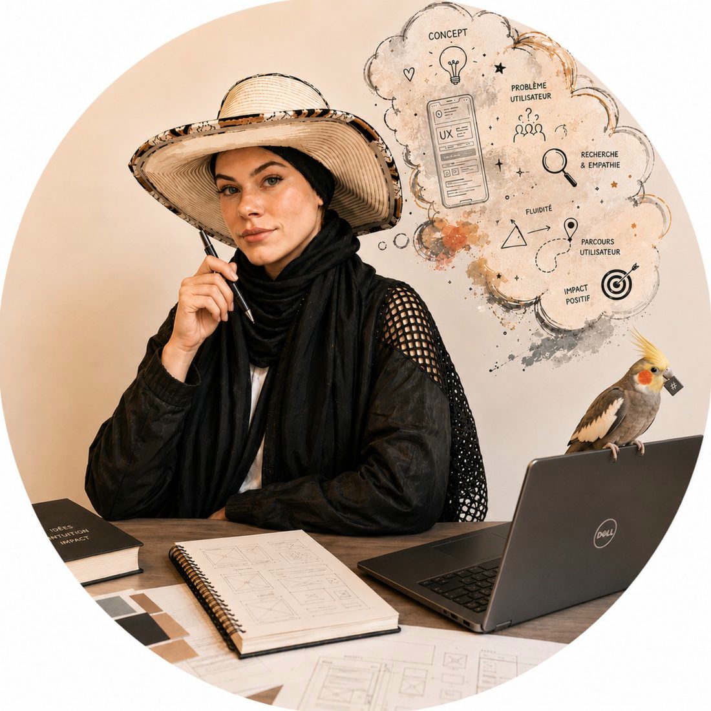
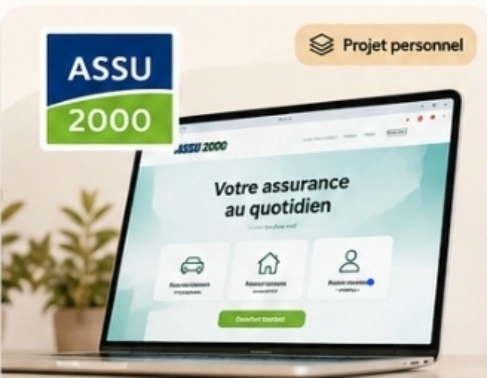
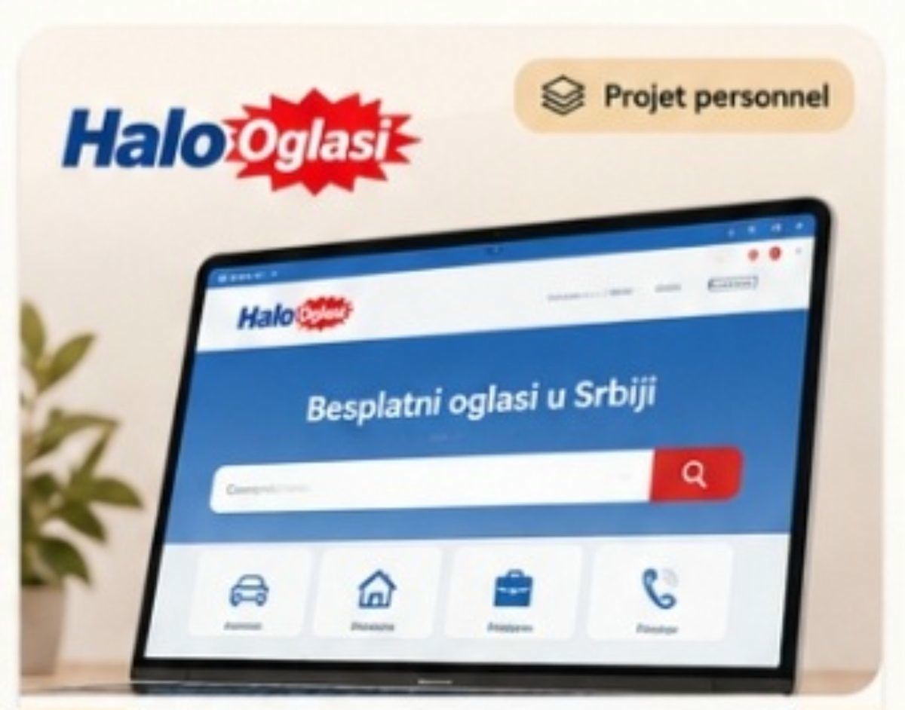
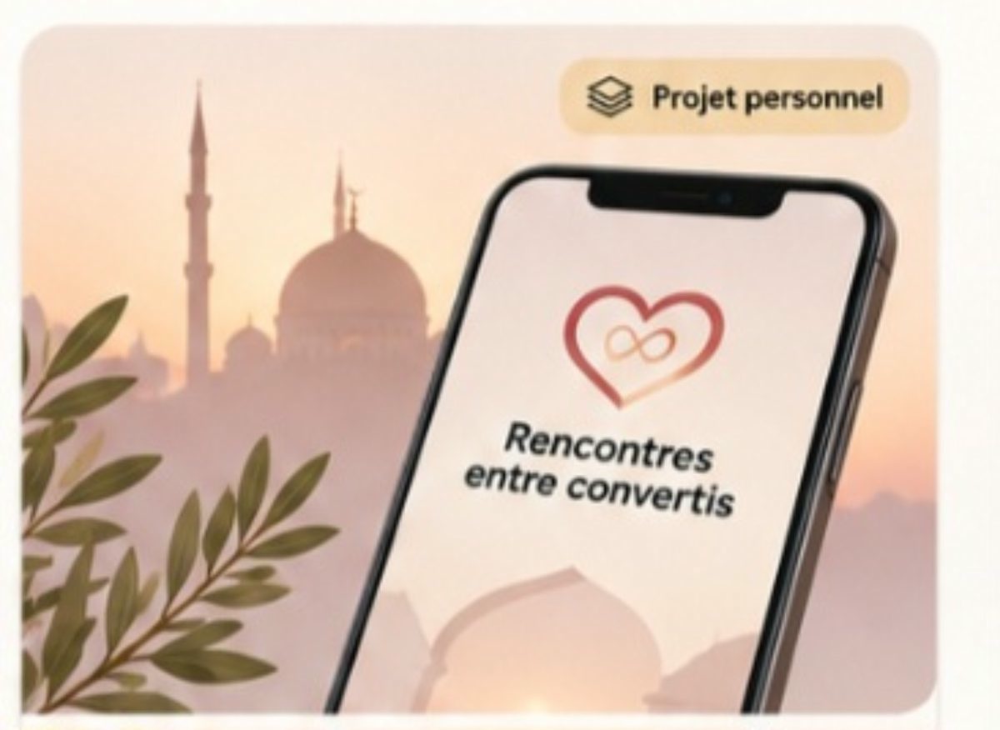

Analyse globale
Parcours, ergonomie, hiérarchie de l’information.
Portfolio UX
Analyser les parcours numériques pour les rendre plus simples, clairs et accessibles.
Parcours, ergonomie, hiérarchie de l’information.
Identifier ce qui fonctionne et ce qui peut être amélioré.
Des recommandations concrètes et prioritaires.

Comprendre · Analyser · Améliorer
Des études de cas personnelles, présentées clairement et sans données réelles.

Une refonte personnelle pour rendre l’espace client plus lisible et faciliter l’accès aux contrats et aux documents. La maquette utilise des données fictives.
Voir l’étude de cas →
Audit UX · site web (Serbie)
Analyse UX d’une plateforme de petites annonces en Serbie, avec des pistes d’amélioration des parcours.
Voir la page en préparation →
Étude de cas · application mobile
Étude de cas autour d’une application mobile dédiée aux personnes converties.
Voir la page en préparation →Mon approche
J’aime élargir mes connaissances aux domaines qui entourent le design : comprendre un peu mieux les contraintes techniques aide à dialoguer avec les développeurs et à imaginer des solutions plus réalistes. Mon portfolio, réalisé en code avec l’appui de l’IA, me permet aussi d’apprendre en faisant.
Voir mon parcours →